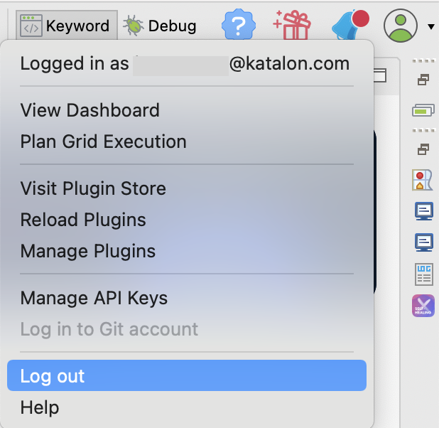
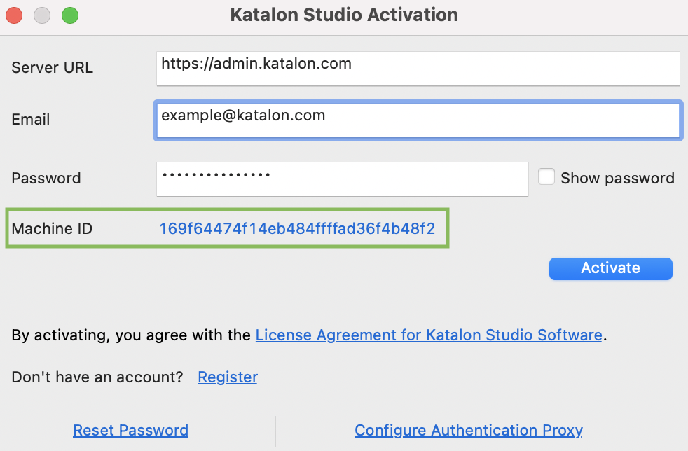

In Katalon Studio
To view your machine ID in Katalon Studio, follow these steps:
-
Open Katalon Studio. In the toolbar, click on the Profile button and select Log out. You will be logged out of your current account, and the Katalon Studio Activation dialog appears.

Note:If this is your first time opening Katalon Studio, the Katalon Studio Activation automatically pops up.
-
In the Katalon Studio Activation log, you can view and copy your machine ID.
